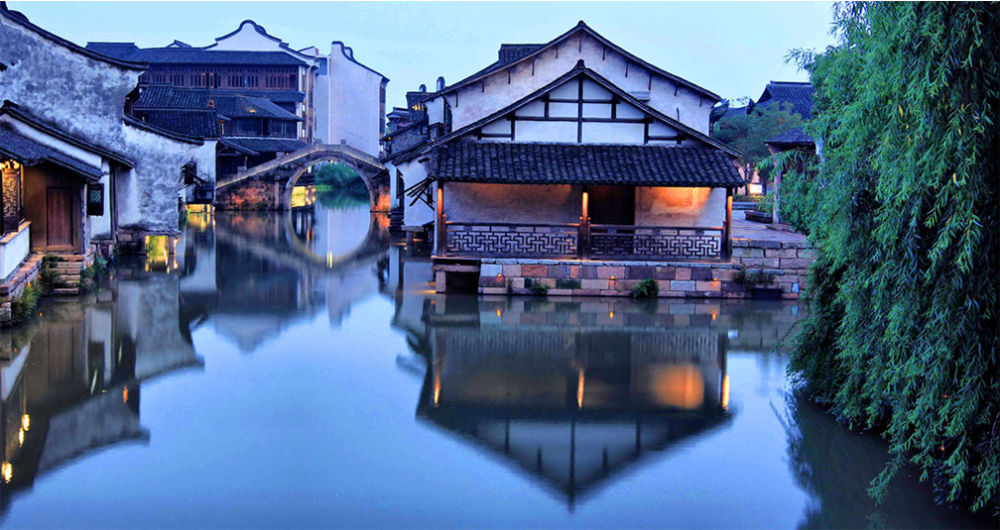
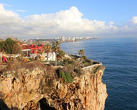
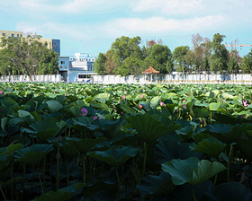
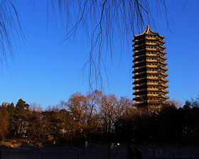

欢迎来到XXX官方网站，我们竭诚为您服务！
移动端
登录
免费注册
在线预约
首页
公司概况
新闻动态
精选线路
养生商城
旅游宝典
会员尊享
醉美夕阳
我行我秀
游客说
联系我们
游客说
游客说
当前位置：
首页
>
游客说
XXX旅游沿途拍摄-乌镇风光

XXX旅游沿途拍摄-乌镇风光

XXX旅游沿途拍摄-乌镇风光
XXX旅游沿途拍摄-乌镇风光
XXX旅游沿途拍摄-乌镇风光
XXX旅游沿途拍摄-乌镇风光
XXX旅游沿途拍摄-乌镇风光
XXX旅游沿途拍摄-乌镇风光
XXX旅游沿途拍摄-乌镇风光
XXX旅游沿途拍摄-乌镇风光

XXX旅游沿途拍摄-乌镇风光

XXX旅游沿途拍摄-乌镇风光
<
1
2
3
>
官网会员注册问题
手机注册和邮箱注册有哪些...
网站注册会员有什么好处？
会员注册有什么优惠政策？
注册成为会员需要哪些资料...
旅游行程问题
手机注册和邮箱注册有哪些...
网站注册会员有什么好处？
会员注册有什么优惠政策？
注册成为会员需要哪些资料...
支付和退款问题
手机注册和邮箱注册有哪些...
网站注册会员有什么好处？
会员注册有什么优惠政策？
注册成为会员需要哪些资料...
扫一扫微信关注
XXX旅游
服务热线：XXX
地址：XXX
山东XXX国际旅行社有限公司 旅游经营许可证：XXX
山东交运旅游集团济南XXX分公司 旅游经营许可证号：XXX
Copyright © 2016-2020 山东XXX国际旅行社有限公司 版权所有 管理备案号：鲁ICP备XXX号-2
旅游局投诉电话：
12301
技术支持：XXX
 扫一扫微信关注
扫一扫微信关注